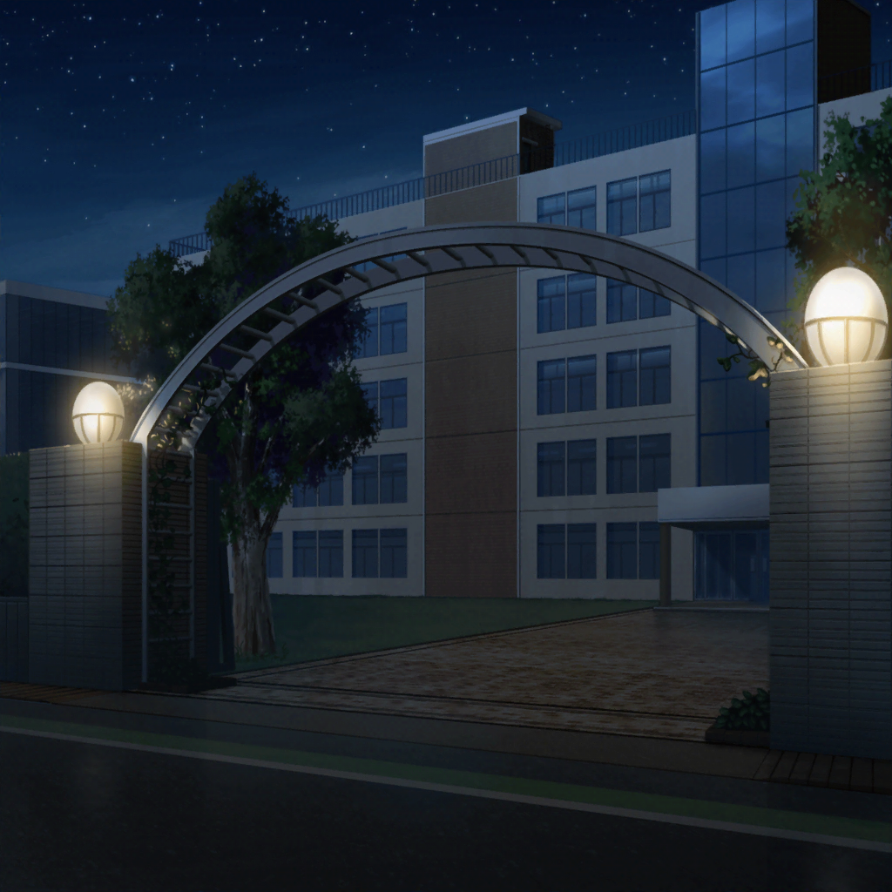
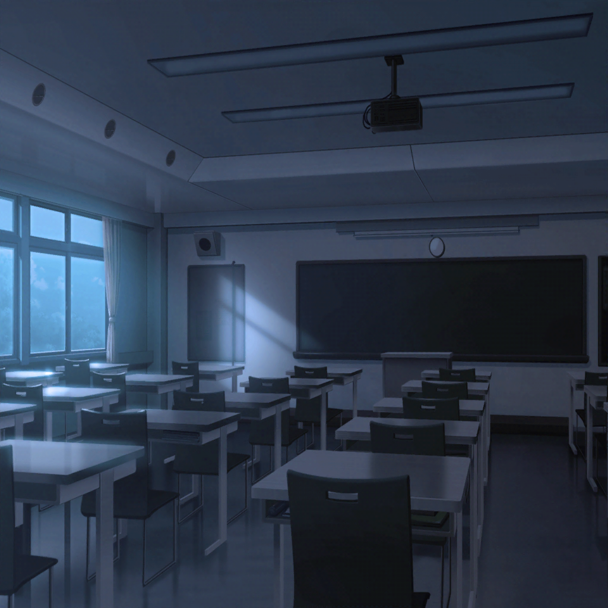
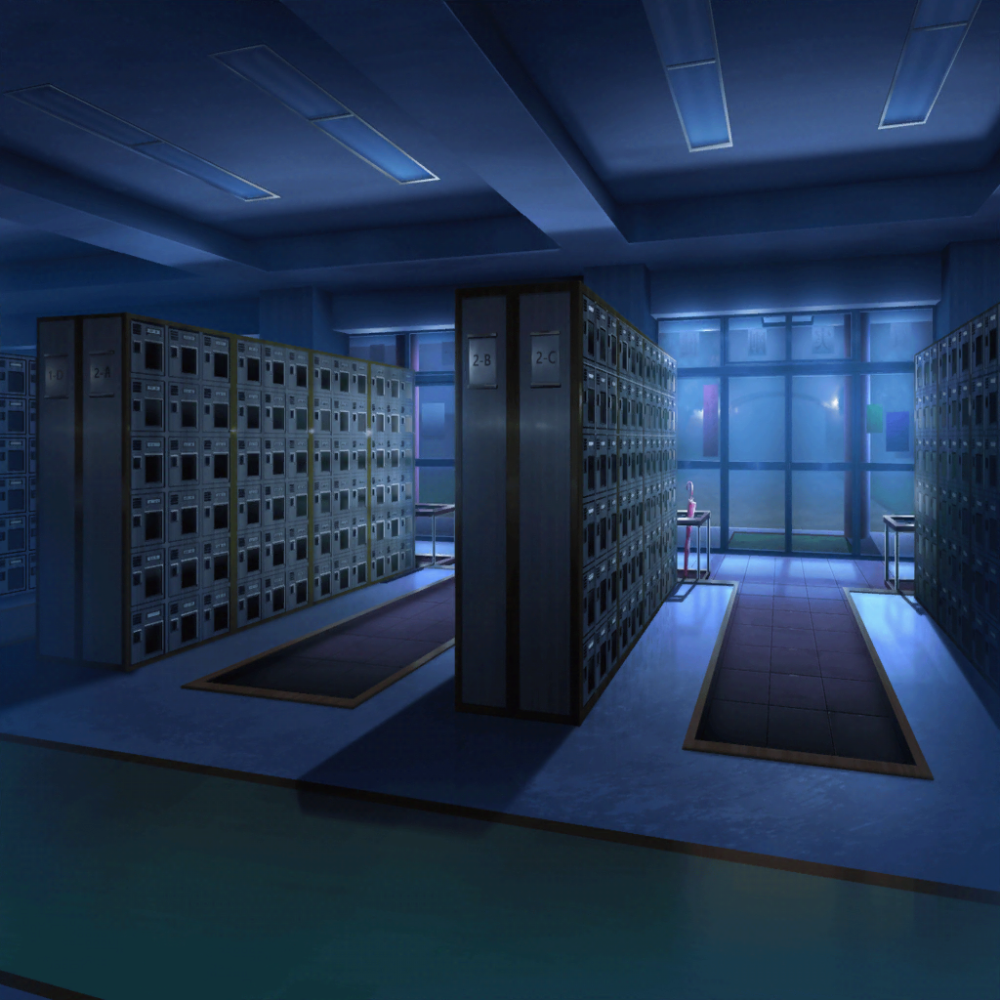

羽丘女子学園 校門
ひまり
うあ……真っ暗……
巴
つぐの言うとおり、今日以降は閉鎖されそうな雰囲気だな
つぐみ
鍵、開いてるかなあ？
モカ
だいじょーぶ。まだ鍵は開いてるっぽいし、中には入れそうだよ〜
ひまり
よかったあ……！
巴
よし、早く取りに行こう

羽丘女子学園 1-B
モカ
ひーちゃん、どこに置いてきたか覚えてる〜？
ひまり
多分、机の中にしまっちゃったんだよね〜。
ちょっと、探してみるね
蘭
……
モカ
……？
モカ
ら〜〜ん〜〜
蘭
うわあっ！？
巴
うわっ！？ ど、どうした！？
蘭
モカが急に後ろから声かけてくるから……っ！
巴
モカ、そういうのやめろよな……！
モカ
いやいや、あたしは怖がってる蘭をリラックスさせようと
思っただけだよ〜
蘭
べ、別に怖がってなんかないし！
つぐみ
蘭ちゃん、暗いところ苦手だもんね。
大丈夫、もうすぐ終わるからね！
蘭
つぐみ……！ だからそれは誤解だって……！
ひまり
あった！
参考書、あったよ！
つぐみ
よかったあ〜……
ひまり
みんな、ありがとう〜！
これで宿題も進められるよ〜！
蘭
早くここ出よう、今すぐ

羽丘女子学園 昇降口
巴
さて、ひまりには何をおごってもらおっかな〜？
モカ
あたしパンねー
蘭
あたしはつぐみん家のコーヒーがいいな
つぐみ
ふふっ、毎度ありがとうございますっ♪
ひまり
うう、わかりました〜……
蘭
……あれ？
巴
どうした、蘭？
蘭
ここ、鍵かかってる……
ひまり
えっ……！？ 他のドアは！？
つぐみ
どのドアも外から鍵がかけられてるね……
もしかして、私達が校舎にいることを知らずに
警備員さんが鍵をかけちゃったのかも……
ひまり
それじゃあ私達……
巴
と、閉じ込められた……っ！？
蘭
……っ！！！
ひまり
ど、どうしようっ！？
私達このまま、始業式の日までここで過ごすのっ！？
モカ
おもしろくなってきましたな〜
蘭
こんなの、面白いわけないじゃん……！？
つぐみ
お、おお、落ち着こう！ 大丈夫、きっとまだあいている扉が
あるはずだよ！ えーと、えーっと……
巴
も、もしかすると、体育館のほうの非常口が
あいてるかもしれないぞ！
巴
部活で帰りが遅くなった生徒のために、いつもあけてくれている
扉があるんだ。あそこなら……
ひまり
ここから体育館までってけっこう距離があるよね……
そこまで歩いて行くの……？
蘭
……けど、ここにいたって、閉じ込められて干からびるだけだよ
一同
……
巴
……みんな、準備はいいな？
つぐみ
う、うん……！
巴
よし、行こう……！